画像や図形を格納したファイルの種類には，用途などによって様々なものがあります．
画像・図形ファイルの種類
- PostScript (PS)
- Adobe 社が開発したプリンタ制御用の言語で，PDL (Page Description Language: ページ記述言語）の一つです．印刷物の「ページ」に文字や図形，画像などを配置します．PostScript は PostScript プリンタに組み込まれたインタプリタによって解釈されますが，gs (Ghostscript) はそれと互換性のあるインタプリタソフトウェアです．gv, ggv, ghostview は gs にユーザインタフェースを付けたものです．
- Encapsulated PostScript (EPS)
- 他の PostScript ファイルに埋め込んで，一つの図形要素として使えるようにカプセル化された PostScript 形式のファイル形式です．
- Portable Document Format (PDF)
- ページのレイアウトを保持したまま文書の交換を行うための，PostScript から派生したデータ形式です．異なるコンピュータ間で文書ファイルのレイアウトを正確に再現できるため，マニュアルなどの電子化に用いられています．PostScript ファイルから gs を使って作成できるほか，Tgif でもこの形式でファイルを出力できます．
- Scalable Vector Graphics (SVG)
- XML で記述されたベクトル形式の図形を表現する言語です．また，この言語で記述された図形ファイルの形式です．Web の標準的な規格の一つですが，Microsoft の Internet Explorer は（バージョン 8 まで）標準ではサポートしていません．
- Graphics Interchange Format (GIF)
- パソコン通信 (CompuServe) において画像データを交換するために考えられたファイル形式です．同時に 256 色までしか表現できないため写真などの表現には向きませんが，コンピュータの画面表示など単調な色使いの画像ならかなりデータサイズを小さくできるため，Web のバナーなどに多用されています．
- JPEG File Interchange Format (JPEG, JFIF)
- JPEG (Joint Photographic Expert Group) という団体によって開発された符号化方式を用いた，画像ファイルの形式 (JFIF)です．写真画像を非常に効果的に圧縮でき，画質とデータサイズのトレードオフを制御できるという特徴を持ちます．GIF とは逆に単調な色使いの画像に用いると，かえって画像が乱れる場合があります．
- Microsoft Windows Device Independent Bitmap (DIB, BMP)
- Microsoft Windows で用いられている画像ファイルの形式です．
- Tag Image File Format (TIFF)
- Aldus 社（後に Adobe 社に吸収）と Microsoft 社が共同で開発した，さまざまな画像データを保持できる画像ファイルの形式です．
- Portable Network Graphics (PNG)
- GIF の特許問題や色数の制限など問題を回避するために，新しく考えられた画像データの形式です．データの符号化方法には LZW より効率がよく特許の問題もない手法が採用されています（この特許は日本国内において2004年6月20日に期限切れにより失効しています）．また色数も 256 色のほかにフルカラー画像も扱えます．
- TrueVision Targa (TGA)
- TrueVison 社の画像取り込み装置が出力する画像ファイルの形式．多くのビデオ編集システムで，ひとコマ単位の画像データとして使用されています．LightWave などの CG ソフトウェアでも，この形式で画像を出力できます．
作図ソフトの Inkscape（後述）では，図を線分や円などの図形要素の組み合わせで表現しています．このような図のデータは，一般にベクトル形式と言います．PostScript や EPS，PDF，それに SVG などもベクトルデータを保持することができます．これに対して，写真のように色のついた点（画素，ピクセル）の集合で画像を表現したものは，ビットマップ形式と言います．Windows の画像データである BMP や，デジタルカメラや Web で使用される JPEG などはビットマップ形式のデータです．普通，画像データと言えば，ビットマップ形式の画像データのことを指します．
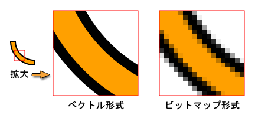
ベクトル形式のデータは拡大縮小してもぼやけたりつぶれたりすることがありませんが，写真のような画像を扱うことが困難です．ただしベクトル形式のデータでも，図形要素の一つとしてビットマップ形式のデータを保持することがあります．
図形ファイルや画像ファイルを画面に表示するソフトウェアを，一般にビューアと言います．ページャも言わばテキストファイルのビューアです．
| 拡張子 | ファイルの種類 | ビューアソフトウェア |
|---|---|---|
| .ps | PostScript | gs, ggv (PostScript ビューア), evince (ドキュメントビューア） |
| .eps | Encapsulated PostScript | |
| Portable Document Format | acroread (Adobe Reader 9), evince (ドキュメントビューア）, epdfview (ePDF ビューア) | |
| .svg | Scalable Vector Graphics | eog (Eye of GNOME, 画像ビューア) gthumb (gThumb 画像ビューア), Geeqie, display |
| .gif | Graphics Interchange Format | |
| .jpg, .jpeg, .jfif | JPEG File Interchange Format | |
| .bmp | Microsoft Windows Device Independent Bitmap | |
| .tif, .tiff | Tag Image File Format | |
| .png | Portable Network Graphics | |
| .tga | TrueVision Targa | |
| .swf | Macromedia Shockwave Flash | (Web ブラウザ) |
display は ImageMagick という画像管理ソフトウェアの一部で，非常に多機能です．gThumb は複数の画像ファイルのプレビュー画像（縮小した画像）を表示して，ファイル・ブラウザのように画像ファイル表示や管理を行うことができます．この他に，画像の表示機能はありませんが netpbm というコマンド群を用いれば，たいていの画像ファイルの形式を別の画像ファイルの形式に変換することができます．
ビューアソフトウェアによっては，拡張子が指定されていなくても画像ファイルの種類を判別できる場合があります．magic は Unix や Linux において拡張子に頼らずにファイルの中身を判別する手段です．magic とはマジックナンバーのことですが，ファイルのタイプに対して実際に番号が割り振られているわけではありません．これは file コマンドがファイルの中身を調べるときにヒントとして使っているファイルの先頭のデータのパターンです．パターンのデータベースは /usr/share/magic というファイルにあります．
| file ～ファイルの種類を調べる |
|---|
% file image.png[Enter] image.png: PNG image data, 720 x 540, 8-bit, colormap, non-interlaced % file figure.ps[Enter] figure.ps: PostScript document text conforming at level 2.0 |
Unix/Linux ではファイル名の拡張子による判断があてにならない（拡張子が付いていないものが多い）ため，これを使って中身を確認するアプリケーションソフトウェアもあります．もちろん，magic がデータベースに登録されていないファイルは判断できません．
GIMP は非常に高機能な画像編集ソフトウェアです．この分野のソフトウェアでは Adobe 社の PhotoShop が有名ですが，GIMP もそれに劣らない多機能性を誇っています．Windows 版や Mac 版もあります．詳しい使い方はマニュアル（ここに日本語訳があります）を読んでください．Windows 版のソフトウェアや日本語化されたマニュアルはダウンロードページにあります．
端末を開いて gimp コマンドを実行してください．
| GIMP の起動 |
|---|
% gimp &[Enter] |
メニューからも起動できます．
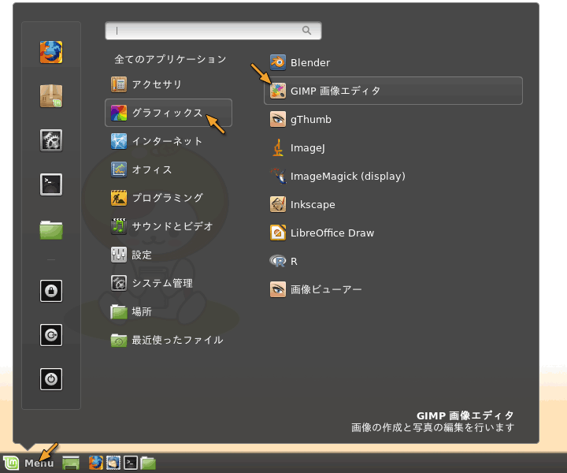
GIMP の起動画面が表示されます．
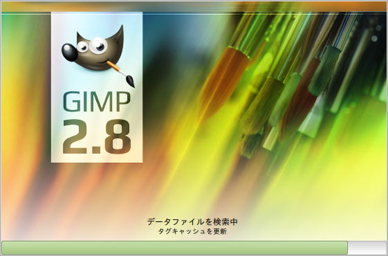
しばらく待っていると，三つのウィンドウが開きます．真ん中の横長のものが，メインウィンドウです．画像ファイルは，ここにドラッグアンドドロップして開くこともできます．今回の授業で使用する GIMP のバージョンは 2.8 ですが，以降の説明は GIMP のバージョン 2.6 のものです．使い方はほとんど変わりませんが，わからないことがあれば質問してください．あからさまに手を抜いてすまん．
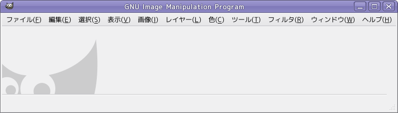
メインウィンドウの左にツールボックスのウィンドウが開きます．ツールボックスのウィンドウの上半分には，用意されているツールのアイコンが並んでいます．下半分には，現在選択されているツールの設定が表示されます．
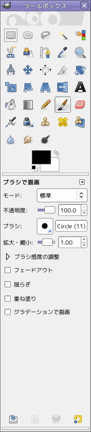
右側にはレイヤー，チャンネル，パス，アンドゥ（操作の履歴）のタブを備えたウィンドウが開きます．レイヤーは複数の画像を合成するときに使います．チャンネルは画像の色成分（赤，緑，青，アルファ値）ごとに編集するときに使います．パスは画像上に線を描いて操作するときに使います．アンドゥは操作の履歴で，処理中の画像を以前の状態に戻すことができます．
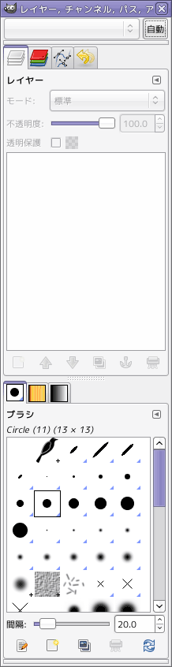
レイヤーは複数の画像を合成するときに使います．チャンネルは画像の色成分（赤，緑，青，アルファ値）ごとに編集するときに使います．パスは画像上に線を描いて操作するときに使います．アンドゥは操作の履歴で，処理中の画像を以前の状態に戻すことができます．
それでは，とにかく何か描いてみましょう．まず，「白紙」の画像を用意します．メインのウィンドウの「ファイル」メニューから「新規」を選ぶか，Ctrl-N をタイプしてください．
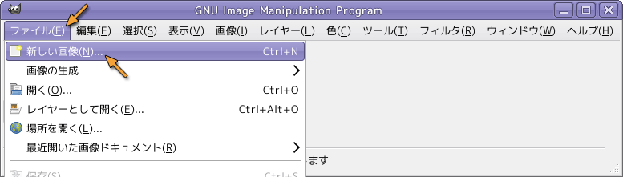
すると次のウィンドウが現れます．ここで作成する画像の大きさを指定します．画像サイズ（キャンバスサイズ）は作成する画像を構成するピクセル（輝点，画素）数です．幅と高さにそれぞれ 256 を設定したら，下の詳細設定の左の三角をクリックしてください．
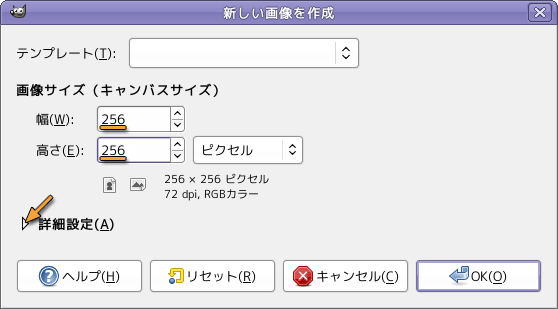
詳細設定では，画像サイズのほかに解像度や色空間，それに塗りつぶし色などを設定できます．
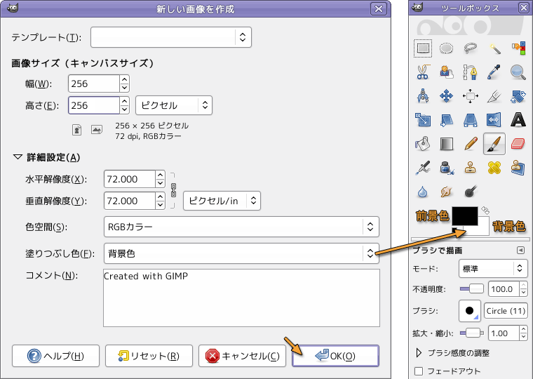
解像度は，単位が「ピクセル/in」なら（コンピュータはアメリカ由来のものなので，単位として in = インチがよく使われます）１インチあたりのピクセル数です．上の設定のそれぞれの数値には，次のような関係があります．
色空間の 「RGB カラー」はカラー，「グレースケール」は白黒を意味します．Photoshop のように「CMYK」や「Lab」などは（いまのところ）サポートとしていません．塗りつぶし色は新規に作成する画像の色です．前景色と背景色は，「ツールボックス」ウィンドウの色設定を使います．
設定が完了したら「OK」をクリックしてください．メインのウィンドウに「名称未設定」というタイトルが付いた画像が現れます．
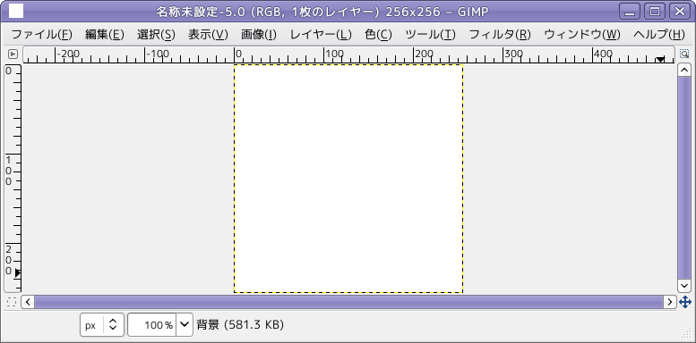
同時に，「レイヤー，チャンネル，パス，アンドゥ」のウィンドウに「背景」という項目が現れます．
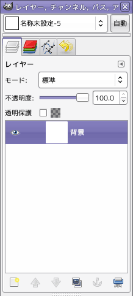
それではここに何か描いてみましょう．最初に会得した「技」のとおり，GIMP のほとんどの機能は，この作画ウィンドウ上でマウスの右ボタンをクリックして現れるメニューで呼び出すことができます．
まず，ペンの色を決めます．前景色は描画に使う色です．前景色を設定するには，「ツールボックス」のウィンドウの「前景色」をクリックしてください．
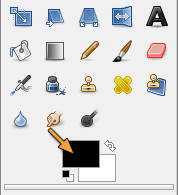
すると「描画色を変更」のウィンドウが現れます．色の選択方法は５種類ありますが，そのうち一番左のもの（GIMP 方式）について解説します．
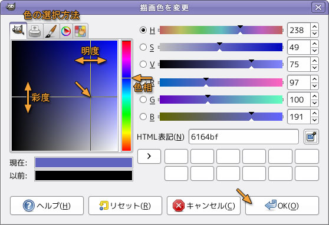
使いたい色の色相 (Hue) を真ん中の縦棒から選びます．そして左側の領域で彩度 (Saturation) と明度 (Value) を調整します．この順番はどうでも構いません．もちろん，右側のスライダをドラッグしても調整できます．このウィンドウは，邪魔なら閉じても構いませんが，開きっぱなしでも問題ありません．
次に作画に使う画材を選択します．試しに「ブラシ」を選んでみましょう．
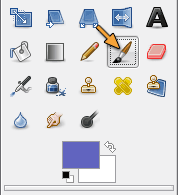
そして，絵筆のブラシの形を選択します．ブラシの設定は「ツールボックス」のウィンドウの下半分にもありますが，「レイヤー，チャンネル，パス，アンドゥ」のウィンドウの下半分にもあります．ここでは小さ目の，くっきりとしたブラシを選択してみます．
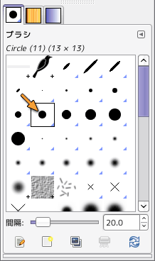
その後，作画ウィンドウでマウスをドラッグします．
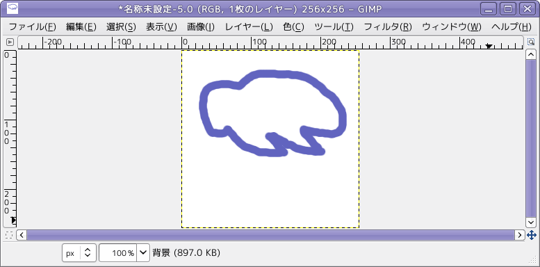
失敗したと思ったら，Ctrl-Z をタイプするか，ウィンドウの上部またはマウスの右ボタンをクリックして現れる「編集」メニューから「元に戻す」を選べば，操作を取り消すことができます．ちなみに「やり直す」は，取り消した操作をもう一度やり直します．
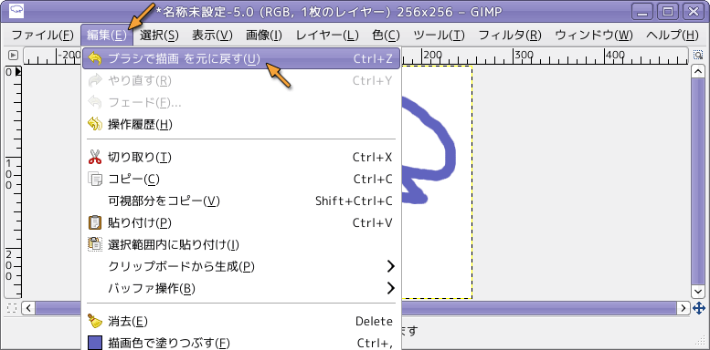
上の絵のように閉じた領域には，ペンキ缶を使って色を流し込むことができます．
ここではパターンで塗り潰すことにします．「塗り潰しツール（ペンキ缶）」を選んでください．
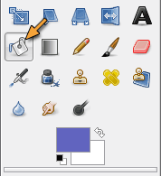
その後，「パターン設定」をクリックし，さらに「塗りつぶし」のオプションで「パターン塗り」を選択してください．
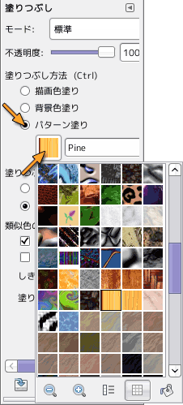
塗りつぶしのパターンは「レイヤー，チャンネル，パス，アンドゥ」のウィンドウの下半分でも選択できます．
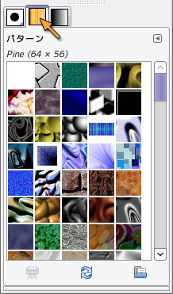
あとは塗りつぶす領域をマウスでクリックして，その領域を塗りつぶしてください．
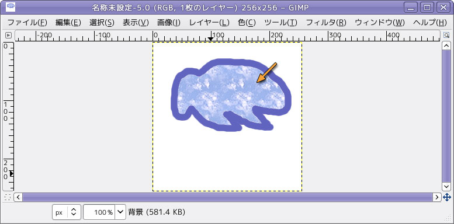
描いたものを消すには，消しゴムを使います．
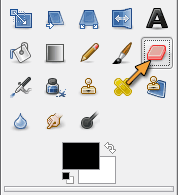
これは絵筆などと似ていますが，描画に背景色を使います（画像にアルファチャンネルがない場合）．
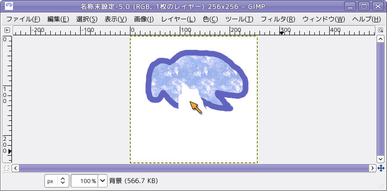
画像にアルファチャンネル（透明度のデータ）を追加するには，メインのウィンドウの「レイヤー」メニューから「透明部分」を選択し，そこから「アルファチャンネルを追加」を選んでください．
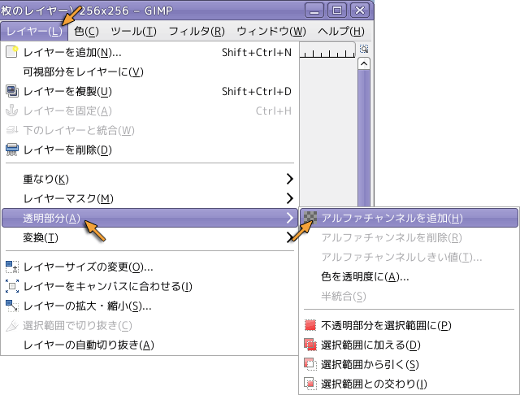
アルファチャンネルを追加した画像では，「消しゴム」で消去した部分が透明になります．
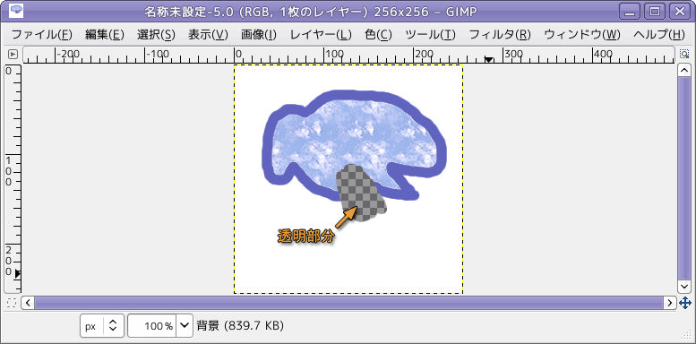
領域を選択して消すこともできます．例えば，次の方法で楕円形の領域を消すことができます．まず「楕円選択」を選択してください．
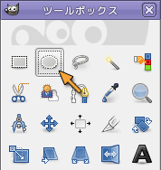
そして作画ウィンドウ上でマウスをドラッグして，領域を選択してください．
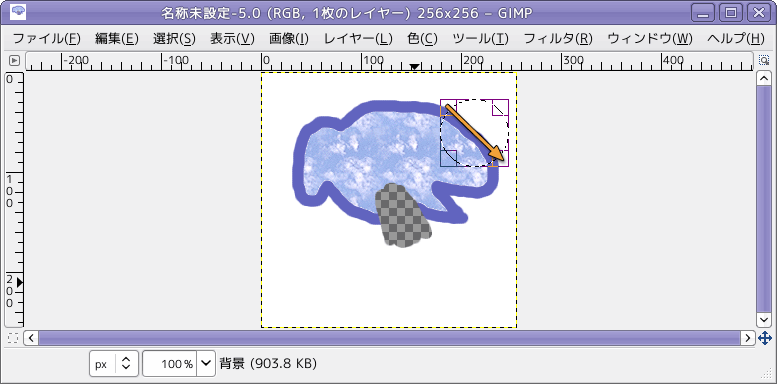
最後に「編集」メニューから「切り取り」を選んでください．
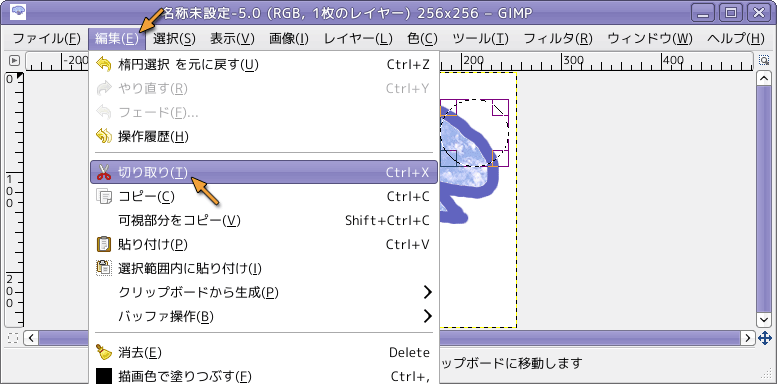
選択した部分が消されます．
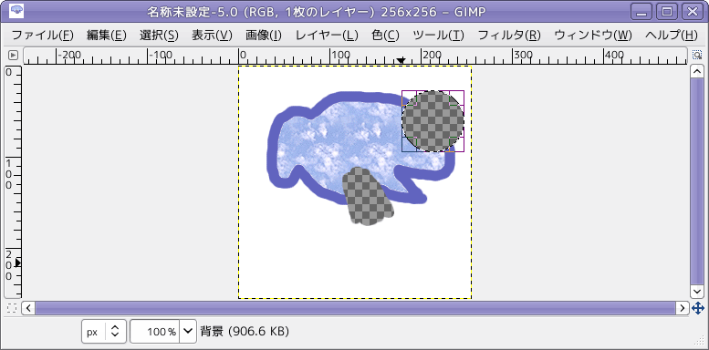
「楕円選択」のツールオプションで選択範囲をぼかすことができます．
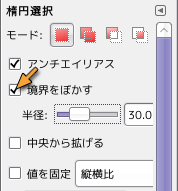
これは次のような消し方になります．
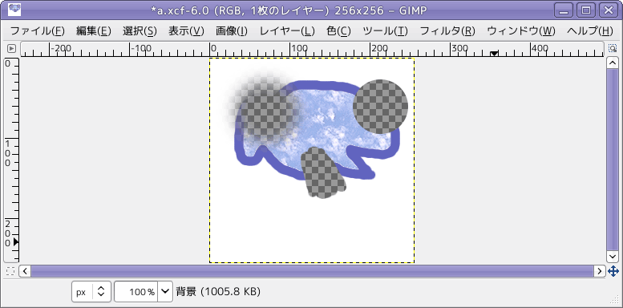
画像を拡大縮小するには，「画像」メニューから「画像の拡大・縮小」を選んでください．
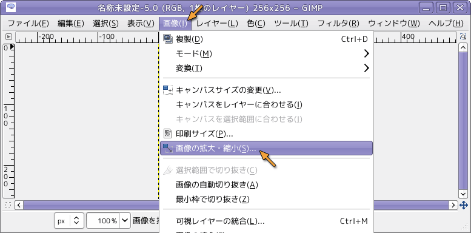
「画像の拡大・縮小」のウィンドウで画像サイズの「幅」と「高さ」を設定してください．ここでは 100 x 100 ピクセルにしてみます．「幅」と「高さ」の右側にある鎖がつながっていれば，拡大縮小時の縦横比が一定にななります．このときは「新しい幅」か「高さ」のどちらかを指定すれば，もう一方も自動的に決まります．
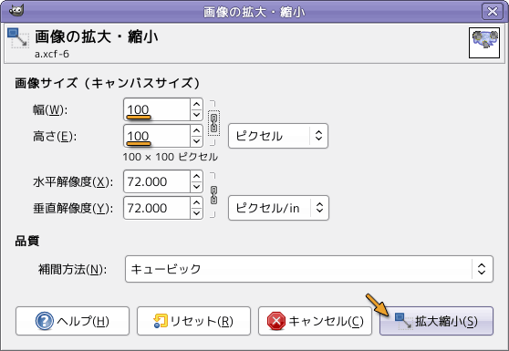
最後に「拡大縮小」をクリックしてください．
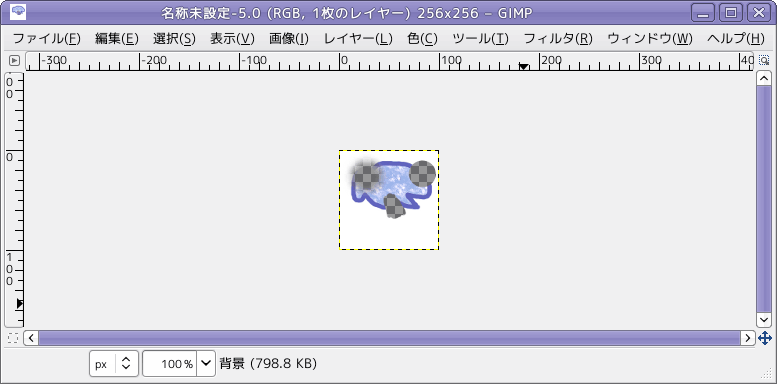
この処理も Ctrl-Z をタイプすれば取り消すことができます．
編集した画像を保存するには，Ctrl-S をタイプするか，「ファイル」メニューから「保存」を選んでください．
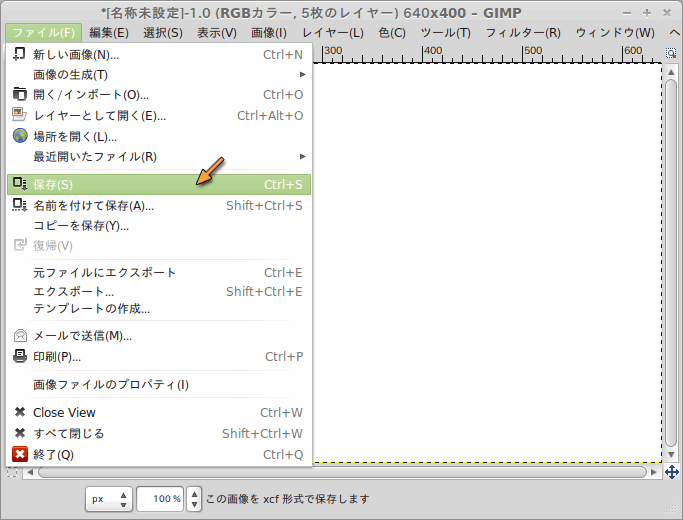
ファイルの保存先 (場所) を指定した後，ファイル名 (名前) を指定します．ファイルの保存先はホームディレクトリ (自分のユーザ名) か，「ピクチャ」フォルダでいいと思います．ファイル名は，ここでは "image.xcf" とします．".xcf" は GIMP の画像データの拡張子です．ファイルタイプの現在の設定が「拡張子で判別」となっていることを確認してください．問題がなければ「保存」をクリックします．最後に「保存」をクリックしてください．
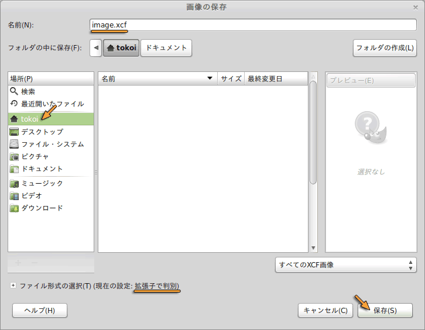
".xcf" 形式のファイルは Web ページでは使えないので，これを JPEG 形式にエクスポートします．編集した画像を保存するには，Shift-Ctrl-E をタイプするか，「ファイル」メニューから「エクスポート...」を選んでください．
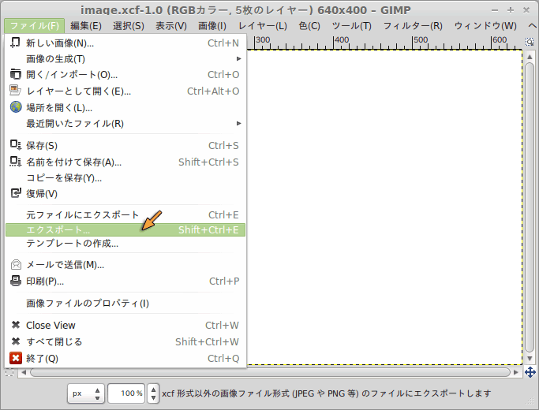
ファイルはホームディレクトリの html というディレクトリに保存します．場所で自分のユーザ名を選んで，html をダブルクリックしてください．
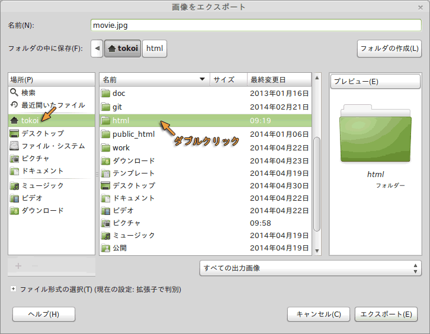
保存するファイル名は，ここでは image.jpg とします．「ファイル形式の選択」の現在の設定が「拡張子で判別」になっていれば，ファイル名の拡張子を ".jpg" にしてエクスポートすると，画像は JPEG 形式で保存されます．
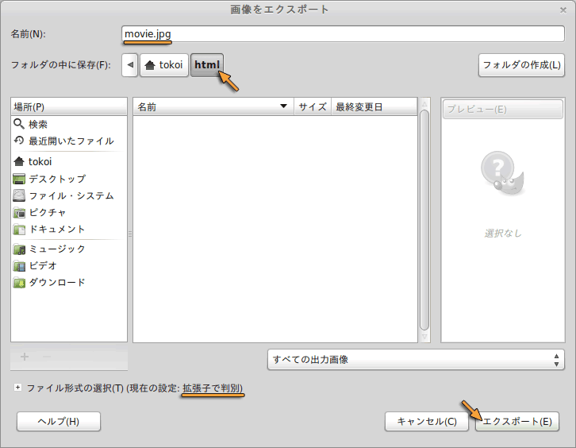
JPEG 形式の画像は，保存のときに品質（画質）を指定する必要があります．品質を高くすればオリジナルに近い画像が保存されますが，ファイルサイズ（データの量）が大きくなります．「画像ウィンドウでプレビュー」にチェックを入れて，保存される画像の画質を確認しながら品質を調整してください．
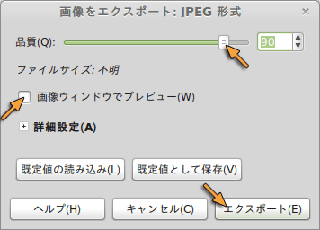
GIMP には，目的の画像を得るために同じ手順を何度も繰り返す手間を省いたり，GIMP 自身が持つ画像処理機能を組み合わせてより高度な処理を実現したりするための，Script-Fu と呼ばれる一種のプログラミング機能が用意されています（現在のバージョンでは Python-Fu というものも用意されています）．この機能によって実現された画像処理手法が既にいくつか用意されていますから，それを使ってバナー画像（Web ページを飾る看板の役割を果たす画像）を作ってみましょう．
画像を新規に作成してください．大きさは，ここでは幅400ピクセル，高さ100ピクセルとします．あまり大きな画像にはしないほうが無難でしょう．
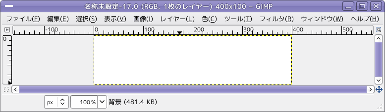
まず，前景色と背景色を選択します．
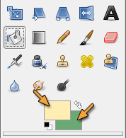
次に，画像を背景色で塗りつぶします．塗りつぶしにはペンキ缶が使えますが，背景色で塗りつぶすためには[Ctrl]キーを押しながらマウスの左ボタンをクリックしてください．
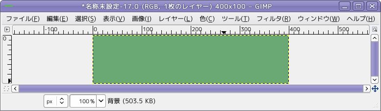
「編集」メニューから「背景色で塗りつぶし」を選んでも塗りつぶすことができます．
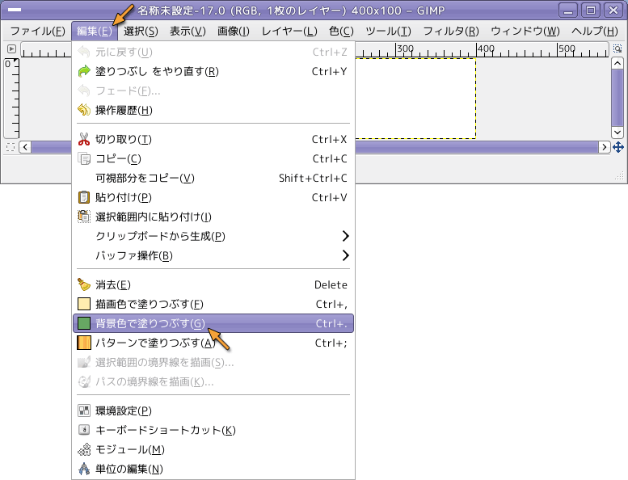
「ツールボックス」のウィンドウで「A（文字）」のボタンをクリックした後，フォントのオプションでフォント（字体）を選び，大きさを設定してください．
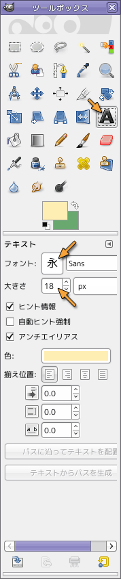
この後，画像のウィンドウをマウスでクリックすれば，「GIMP テキストエディタ」のウィンドウが開きます．ここに作成したい文字をタイプしてください．
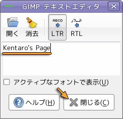
「閉じる」をクリックすれば，画像上に文字が表示されます．
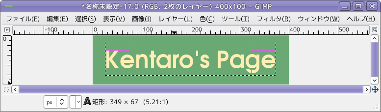
文字の位置は「移動」のボタンをクリックしてから，マウスで文字をドラッグして調整してください．
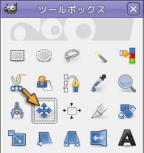
作成した文字に，ぼけた影を付けてみます．「フィルタ」メニューの「照明と投影」という項目にある「Drop Shadow...」を選んでください．
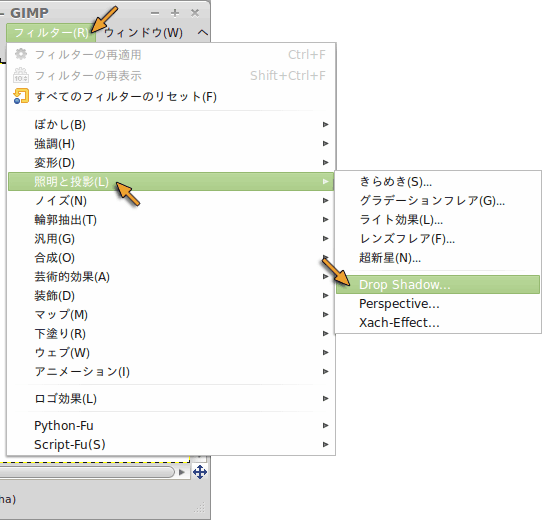
「Script-Fu: ドロップシャドウ」ウィンドウで影のつき方を微調整した後，「OK」をクリックしてください．元画像（文字）と影のずれ (Offset X, Offset Y)，ぼかし半径 (Blur radius)，不透明度 (Opacity) を設定します．
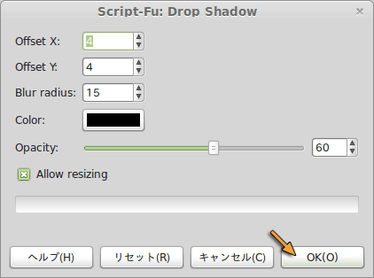
このような影をつけることができます．．
この影は背景のレイヤーと元画像（文字）のレイヤーの間に生成されます．
この画像を JPEG 形式で保存します．「ファイル」メニューから「エクスポート」を選んでください．
「画像の保存」ウィンドウで，名前（ファイル名）に banner.jpg を指定してください．その後「他のフォルダ」の三角▽をクリックし，ホームディレクトリにある html というディレクトリを探してダブルクリックしてください．また，「ファイルタイプを選択」が（現在の設定：拡張子で判別）となっていることを確認してください．最後に「保存」をクリックしてください．
その後，JPEG 形式で保存する際の画像の品質（画質）を設定します．「画像ウィンドウでプレビュー」にチェックを入れれば品質を確認できますので，必要な品質を設定した後，「保存」をクリックしてください．
後で編集するために，レイヤーを保ったまま画像を保存したい場合は，ファイル名の拡張子を .xcf にしてください．上記で作成したバナー画像を保存する場合は，まず「ファイル」メニューから「別名で保存」を選んでください．ファイル名は banner.xcf などにしてください．
なお，「ファイル」メニューにある「画像の生成」を使うと，さまざまなボタンやロゴを自動的に作ることができます．
複数の GIF ファイルをもとに， パラパラ漫画のような簡単なアニメーションを作ることができます．例えば，GIMP の異なるレイヤーに以下のような絵を描くことを考えます．
|
|
|
|
|---|
とりあえず，最初の絵を描きます．
「レイヤー，チャンネル，パス，アンドゥ」のウインドウで，このレイヤーをコピーします．
コピーしたレイヤーを修正します．
修正したレイヤーをコピーします．
コピーしたレイヤーを修正します．
修正したレイヤーをコピーします．
コピーしたレイヤーを修正します．
これで，このような４枚のレイヤーができます．
この状態で画像を保存します．画像上で右ボタンをクリックし，「ファイル」メニューから「別名で保存」を選んでください．
画像を GIF ファイル形式で保存します．先ほど同様 html というディレクトリ（フォルダ）に保存してください．
アニメーションのさせ方（無限ループ，すなわち繰り返すか１回きりか）やアニメーションの速度（指定しない場合のフレーム間の時間，この時間が長いほどアニメーションの速度は遅くなります）を指定して，「保存」をクリックしてください．「指定しない場合のフレームの処理」は「レイヤー毎に１フレーム（置換）」を選んでください．
Web ページに貼り付けると，このようなアニメーションになります（実は「フレーム間の時間」の設定が上の設定とちょっと違います）．

それでは，先ほど保存した画像をホームページに埋め込んでみましょう．画像の埋め込みには <img> タグを使います．emacs で index.html を開き，下線部の内容を追加してください．
<!DOCTYPE html>
<html lang="ja">
<head>
<meta charset="utf-8">
<title>Kentaro's page</title>
<link rel="stylesheet" href="profile.css">
</head>
<body>
<h1>和歌山健太郎のホームページ</h1>
<p><img src="image.jpg" width="256" height="256" alt="自画像">
和歌山健太郎のホームページへようこそ．</p>
<ul>
<li><a href="profile.html">自己紹介</a></li>
<li><a href="timetable.html">時間割</a></li>
</ul>
</body>
</html>
src 属性に指定している画像ファイル名 (image.jpg) は，ディレクトリ html に入れた実際の画像ファイル名にしてください．また width と height には，それぞれその画像の幅と高さを指定してください．出来上がったら， C-x C-s でファイルを保存してください． その後，Firefox で index.html を開いてください．画像がホームページに埋め込まれましたか？
上の例のように，画像は文字と同様に文書の行内にレイアウトされます．画像の周りにテキストを回りこませたりするには，float というプロパティを用います．画像をテキストの左側に配置するには left を指定します．emacs を使って index.html で使用しているスタイルシートのファイル (profile.css あるいは style.css) を開き，下線部の内容を追加してください．その後 C-x C-s でファイルを保存し，Firefox で再読み込みしてください．
body {
border: outset 8px;
line-height: 2;
margin-top: 3em;
margin-left: 5%;
margin-right: 5%;
height: 30em;
color: #003300;
background-color: #669966;
}
dl {
border: inset 5px;
padding: 1.5em;
margin: 1em;
background-color: #ffffcc;
}
dt {
font: bold italic larger serif;
border-top: dotted thin;
border-bottom: dotted thin;
background-color: #bbeebb;
}
h1 {
text-align: center;
text-decoration: underline;
color: #ffffcc;
}
img {
float: left;
}
画像に枠や隣接する要素との間隔を設定することも可能です．profile.css あるいは style.css に下線部の内容を追加し，C-x C-s でファイルを保存してください．そして Firefox で再読み込みしてレイアウトを確認してください．
body {
border: outset 8px;
line-height: 2;
margin-top: 3em;
margin-left: 5%;
margin-right: 5%;
height: 30em;
color: #003300;
background-color: #669966;
}
dl {
border: inset 5px;
padding: 1.5em;
margin: 1em;
background-color: #ffffcc;
}
dt {
font: bold italic larger serif;
border-top: dotted thin;
border-bottom: dotted thin;
background-color: #bbeebb;
}
h1 {
text-align: center;
text-decoration: underline;
color: #ffffcc;
}
img {
float: left;
border: inset 5px;
margin-left: 20px;
margin-right: 2em;
}
あと，デジカメやスキャナを用意しますので，自分の顔写真や自分で描いたイラストなど，独自の素材を使う希望があれば知らせてください．画像が大きすぎる場合は GIMP を使って画像を縮小するか，不要な部分を切り取ってください．
今度は，この講義の第３回で作成した自己紹介の Macromedia Shockwave Flash ファイル (.swf) を，自己紹介のページに埋め込んでみましょう．.swf
ファイルを埋め込む場合には，<img> タグの代わりに <object> タグを使います．emacs で profile.html を開き，下線部の内容を追加してください．
<!DOCTYPE html>
<html lang="ja">
<head>
<meta charset="utf-8">
<title>Profile</title>
</head>
<body>
<h1>自己紹介</h1>
<dl>
<dt>名前</dt> <dd>和歌山健太郎</dd>
<dt>出身地</dt> <dd>和歌山県和歌山市</dd>
<dt>生年月日</dt> <dd>昭和52年6月23日</dd>
<dt>趣味</dt> <dd>美食</dd>
<dt>メッセージ</dt> <dd>美食サークルメンバー募集中</dd>
</dl>
<object data="profile.swf" type="application/x-shockwave-flash"
width="480" height="360"></object>
</body>
</html>
追加できたら C-x C-s でファイルを保存してください．
次に，profile.swf をこの profile.html と同じディレクトリに移します．mv か cp コマンドを使って，ホームディレクトリにある（はずの）profile.swf をカレントディレクトリ (html) に移してください（方法がわからなかったら質問してください）．その後，Firefox に表示されている index.html の中にある自己紹介のページへのリンクをクリックして，このページを開いてください．自分の作ったスライドが埋め込まれているでしょうか（このスライドはクリックすると先に進みます）．
ただ，このままだと自己紹介のページの「枠」から profile.swf がはみ出てしまい，見苦しいかもしれません．その場合は profile.css で設定している <body> タグの height プロパティを調整してください．多分，いっそのこと削除してしまったほうがうまく収まると思います（こういう風に枠のサイズに固定値を設定するとろくなことがありません）．また，<object> タグの margin プロパティも設定したほうがいいかもしれません．
body {
border: outset 8px;
line-height: 2;
margin-top: 3em;
margin-left: 5%;
margin-right: 5%;
height: 30em;
color: #003300;
background-color: #669966;
}
dl {
border: inset 5px;
padding: 1.5em;
margin: 1em;
background-color: #ffffcc;
}
dt {
font: bold italic larger serif;
border-top: dotted thin;
border-bottom: dotted thin;
background-color: #bbeebb;
}
h1 {
text-align: center;
text-decoration: underline;
color: #ffffcc;
}
img {
float: left;
border: inset 5px;
margin-left: 20px;
margin-right: 2em;
}
object {
margin: 1em;
}
Web ページに自分のメールアドレスを書くことは個人情報を公開することになるので，できれば避けたほうがよいのかもしれません．しかし，自分の Web ページを見てくれた人からメールをもらいたいときや，その Web ページの責任の所在（文責）を明らかにする必要があるときなどのように，Web ページ上にメールアドレスを記載する必要がある場合もあります．その場合，一般に変更することが難しいプライベートなメールアドレスを公開する代わりに，Gmail や Hotmail，Yahoo! Mail などのフリーメールサービスに登録して得たメールアドレスを使うこともできます．
メールアドレスを公開すると，スパム（迷惑メール）が届くことがあります．スパムの宛先となるメールアドレスはソフトウェアによって自動収集されることがほとんどなので，コンピュータにはメールアドレスだと判断されないが人間が見るとメールアドレスだと判断できる記法を用いることにより，スパムが届く可能性を避けることができます．
この他に，メールアドレスをエンティティで書くという方法もあります．ただし，これらの有効性はいずれも明確ではありません（自動取集ソフトウェアが対応しているかもしれません）．また「Web ページの文責を明らかにする」という実名主義の観点からも疑問が残りますので，決して推奨はしません．スパムの中には猥褻なもの，詐欺を目的としたもの，コンピュータウィルスやワーム，脅迫など，犯罪的なものも存在しますが，そういうものから身を守れるかどうかは，結局自分自身が正しい判断を行えるかどうかにかかっています．
積極的にメールを受け入れたいと考える場合は，次のような手法を用いることができます．<a href="mailto:メールアドレス"> ～ </a> というように， ホットスポットのリンク先に Web ページの URL ではなく "mailto:自分のメールアドレス"
を指定すると， そのホットスポットをクリックしたときに Web ブラウザのメール機能を呼び出すようにできます．なお，ここには有効なメールアドレスを指定しなければ意味がありません．
<a href="mailto:tokoi@sys.wakayama-u.ac.jp"> <img src="mail.gif" alt="メールください" width="64" height="64" border="0"> メール下さい</a>
これは下のようになります．この絵か文字をクリックしてみてください．
| メール下さい |
ホットスポットとして画像を使用したとき， 通常では画像全体で一つの URL にリンクします． これを，画像上のクリックした位置によって異なる URL にリンクするようにしたものを，クリッカブルマップと呼びます．
クリッカブルマップの実現方法には，いくつかのものがありますが，ここでは <map name="マップ名"> タグを使う方法について説明します．
<map name="organization">
<area
shape="rect"
coords="27,27,117,378"
alt="Wakayama University"
href="http://www.wakayama-u.ac.jp/">
<area
shape="rect"
coords="135,27,549,108"
alt="Faculty of Education"
href="http://www.edu.wakayama-u.ac.jp/">
<area
shape="rect"
coords="135,117,549,198"
alt="Faculty of Economics"
href="http://www.eco.wakayama-u.ac.jp/">
<area
shape="rect"
coords="135,207,549,288"
alt="Faculty of Systems Engineering"
href="http://www.sys.wakayama-u.ac.jp/">
<area
shape="rect"
coords="135,297,549,378"
alt="Faculty of Tourism"
href="http://www.wakayama-u.ac.jp/tourism/">
</map>
<img src="map.gif" alt="和歌山大学・学部" width="260" height="200" usemap="#organization">
<map name="マップ名"> ～ </map> でマップを定義し， そのマップ名を <img src="マップ画像" usemap="#マップ名"> で指定します．<area> タグの shape= 属性は，マップ画像上のホットスポットにする領域の形で， "rect"（長方形），"circle"（円）が指定できます．また
coord= 属性は， shape= 属性で指定したホットスポットの座標を定義します． shape="rect" の場合は長方形の左上の頂点と右下の頂点の位置を指定します．
shape="circle" の場合は中心の位置と半径を指定します．
<area shape="rect" coords="左上のx座標,左上のy座標,右下のx座標,右下のy座標" href="url"><area shape="circle" coords="中心位置のx座標,中心位置のy座標,半径" href="url"><area> タグの href= 属性は， そのホットスポットにリンクする URL を指定します．<img> タグに border="0" を追加してください．次の (1) ～（4) の作業を行ってください．それが完了したら，そのことをメールで tokoi@sys.wakayama-u.ac.jp に知らせるとともに，(5) の内容を送ってください．メールの件名 (Subject) は shori1-07 にしてください．期限は次週の水曜日中までです．
私からの返事を受け取ったら，それ以降はホームページを自由に変更していただいて結構です．なお，上記のサーバのホームページは学外に公開されませんが，少なくとも学内には公開されていますから，他人に見られて恥ずかしくないものを公開しましょう．また，大学の Web ページとして不適切なものが公開されていた場合は削除します．
ムービーファイルの貼り付け方ムービーファイル（アニメーション）の貼り付けは宿題に含めていませんが，一応貼り付ける方法を説明します．ただし，これは（現時点では）Firefox / Opera / Chromium / Google Chrome 限定の方法です．
まず，ムービーファイルを Ogg Theora 形式に変換します．ムービーが Ogg Theora 形式で作成されていれば，この作業は必要ありません．
% ffmpeg -i ファイル名.avi ファイル名.ogg[Enter]作成された Ogg Theora 形式のムービーファイル "ファイル名.ogg" を <video> タグを使って Web ページに埋め込みます．
<video src="ファイル名.ogg" width="640" height="480" controls> <p>ブラウザが対応していればここにビデオが表示されます</p> </video>width，height は実際に作成したムービーのサイズにしてください．controls を付けるとプレイボタンなどが表示されます．
| public_html ディレクトリの作成 | |
|---|---|
| 最初にカレントディレクトリがホームディレクトリであることを確認してください． |
% pwd[Enter] /home/sys/s123456 ←ホームディレクトリにいることを確認 |
| 次に rmdir コマンドを使ってカレントディレクトリにある public_html というディレクトリを削除します． | % rmdir public_html[Enter] |
| その後 mv コマンドを使って html というディレクトリを public_html に変更してください． | % mv html public_html[Enter] |
| ls コマンドを実行してカレントディレクトリに public_html ディレクトリが作成されたことを確認してください． |
% ls[Enter] … public_html … ←public_html が含まれているか確認 |
著作権についてWeb ページの素材として他人の Web ページ上の記述や画像，音声・音楽等を許可無く使用してはいけません．同様に雑誌等の写真や図版，CD 等の音楽，ビデオや DVD の映像等の他人の著作物を無断で利用してはいけません．
{kind=link}
{kind=link}
{kind=link}
{kind=link}
{kind=link}